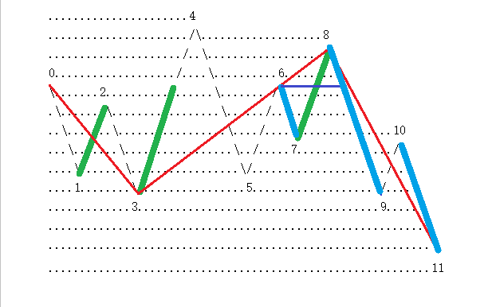

(2007-09-10 22:37:13)
附录：
2007-09-10 16:25:02
缠ＭＭ，自从开始尝试你那意念呼吸后，不到一周，就开始感冒、咳嗽，搞的得挺难受的，后来咳嗽好了，但这几天忽然间身上冒了不少象蚊子叮的包，又红又痒，几天不消。难道这么快就病根发动了？我站着打坐的时间其实很少，只是中午或晚上躺在床上的时候按你说的意念一番，但是往往坚持不了几分钟就睡着了，会这么快就有效果了吗？接下来应该怎么做？要注意什么呢？
==
每个人的根性不同，这些都是一个准备活动，本质上和打坐没什么关系。只是现代人都太脏，无论心理还是生理，本质上，现代人都是病人。所以有些准备活动，把一些脏东西搞出来，给后面留点方便。有反应，如果心里承受不了，就先停停，该看病的看病，把潜在的病诱发出来，并不是坏事。如果心里能承受，那就该怎么是怎么，出点疮算什么？挺过去，自然就好了。坚持不了几分钟，证明宿业甚重，更要加倍努力。消宿业，最好就念佛号，念《心经》也行，否则，光口头上说宿业本空，那你就慢慢空去吧，看到时候是空还是不空。
【韶山映山红】以上附录在前面的问答里面有，现在可以看到原文前面也有。】
首先，发现还有很多人对一些最基本问题犯晕，所以必须在解答一下。然后再说分型的辅助操作。
任何人进入市场，不是要求一个万能的宝贝，然后抱着就想得什么得什么了。
本ID的理论，只是其中的因素，
利用本ID理论操作的人对理论的把握程度，是一个因素，
利用本ID理论操作的人的资金规模以及操作时间，又是一个因素，
这些因素加在一起的合力，才是你最终用本ID理论操作的结果。
世界上的一切事情，都是各种因素和合而生，没有任何是主宰，是唯一的决定力量，这是必须明确的。
第二个因素，因人而异，无法分析；
第三个因素，资金量和操作时间，是可以进行一定的分类分析的。
一、对于很忙，根本没时间操作的人，最好就去买基金。【韶山映山红】自己操作，就要有条件自己盯盘。】
但本ID对基金没有任何信心，而且可以肯定地说，基金肯定会可见的将来内出大事，有些基金要被清盘，最终严重影响市场等，这都是正常的事。美国每年死掉的基金还少吗？中国为什么就不能有基金死掉？证券公司可以死，基金公司凭什么就不能死？【韶山映山红】买基金也有选择的问题。】
但对基金，是可以对指数基金进行定投，这样等于直接买了中国资本市场这个股票，对该股票，本ID还是有信心的。这样，如果最终牛市上到3、4万点，那么至少你不会丢掉指数的涨幅。
其次，一定要投那些与指数关系不大的成长股。因为如果你投了指数基金，再投和指数关系特别大的基金，就没什么意义了。而成长股，往往在熊市或指数表现不好时有大表现，关键这些成长股有足够的成长性。但唯一不能确定的是，你买的基金的管理者是否有足够的能力去找到有足够成长性的股票组合。【韶山映山红】这里说的是成长股的基金，不是成长股本身。】
如果很忙，就用这两种方式进行一个基金组合，例如60%买指数基金，40%买高速成长股的基金，这样就别自己搞股票了。
采取的方式很简单，就是定投，每个月去投一次。这对于一般的散户投资者，最好了，你至少能买到市场波动的平均。
买基金，等于把自己托付给别人，是生是死，就看你的运气了，不过指数基金稍微好点，毕竟对管理者的要求比较低。
二、对于有充足时间的散户，如果交易通道还行，那就用本ID在前面说过N次的第三买点买卖法，方法再说一次：
1、选定一个足够去反应的级别，例如，30分钟或5分钟的，或者干脆就用日线级别的，这样选择的目标相对少点，不用太乱。
2、只介入在该级别出现第三类买点的股票。
3、买入后，一旦新的次级别向上不能新高或出现盘整背驰，坚决卖掉。这样，只要级别足够，肯定是赚钱的。【韶山映山红】a+A中枢的离开b1+返回b2，形成第三类买点，介入。再次离开的b3如果不能新高，或者新高但是线段类盘整背驰，就会形成中枢震荡甚至转折，基于不参与中枢震荡的考虑，所以“坚决卖掉”。】
走了以后，股票可能经过二次回抽会走出新的行情，但即使这样也节省了时间，有时间就等于有了介入新股票的机会。【韶山映山红】形成第三类买点的b2是第一次回抽，b3再次离开之后，b4的返回是第二次回抽。b4可能跌破b2形成中枢、然后继续上涨，也可能不跌破b2形成线段类趋势上涨。】
4、如果股票没出现3的情况，【韶山映山红】再次离开的b3新高并且对b1没有线段类盘整背驰，也就是说，将形成线段类上涨趋势，中枢上移。】那一定是进入新一轮该级别的中枢上移中，一定要持有到该上移的走势出现背驰后至少卖掉一半，【韶山映山红】“该上移的走势出现背驰”是指再次离开的b3内部出现背驰。】然后一个次级别下来（这里可以回补，但如果有新股票，就没必要了），【韶山映山红】b4再次回踩。】在一个次级别上去，只要不创新高或盘整背驰，就一定要把所有股票出掉。【韶山映山红】b5的再次离开“不创新高或盘整背驰”，就结束了中枢上移，将形成新的中枢，所以“要把所有股票出掉”。】
注意，有一个最狠的作法，就是一旦上移出现背驰就全走，这样的前提是你对背驰判断特别有把握，不是半桶水，这样的好处是时间利用率特别高。【韶山映山红】这里说的是前面“至少卖掉一半”的那种情况就“全走”，不参与中枢震荡的过程。和前面的道理一样，如果走势还能继续向上，就还有一个三买在后面等着，符合她的操作习惯。】
5、尽量只介入第一个中枢的第三类买点。因为第二个中枢以后，形成大级别中枢的概率将急促加大。【韶山映山红】这里不说趋势背驰的概率，而是说第二个中枢以后的中枢扩展升级的概率。】
6、本方法，一定不能对任何股票有感情，所有股票，只是烂纸，只是用这套有效方法去把纸变黄金。
走了以后，股票经过盘整可能还会有继续的新的中枢上移，这是否要介入，关键看高一级别中枢的位置，如果该继续是在高一级别中枢上有可能形成第三买卖点，那这介入就有必要，否则就算了。天涯何处无芳草，把所有的草都搞一遍，你自然就从散户变大散户了。
三、资金量比较大的大散户，这时候，用所有资金去追逐第三类买点已经不切实际了，那么就可以对基本面上有长期价值的股票进行附骨抽髓式的操作，例如各种级别的中枢震荡去减低成本增加筹码。这样，资金效率肯定没有第二种散户的高，但资金量不同，操作方法自然不同。
四、专门的猎手，经过三的训练和操作，资金量变得比较庞大了，就可以对选定目标进行猎杀式的攻击。有些人问，把庄家都杀死了，有什么好处？这不是好不好的问题，资金大了，又不坐庄，又要快点把资金效率提高，唯一的办法就是吃大鱼，吃小鱼还不够塞牙缝，有什么意思？
五、就是组织大规模的战役，这必须要有四的良好基础，否则根本做不了。但这种作法，有时候法律的界限比较模糊，例如，对一个或N个板块进行攻击，这和坐庄是什么关系？当然，如果对原来潜伏在一个或N个板块中的所谓大鳄进行围歼式攻击，那么很多时候，解决问题的，就不光是盘面本身了。
六、全局式的战争，这涉及的方面太多，没有一个全局式的战争是光在市场本身就能解决问题的，而且，资本市场的全局战争，更多时候是更大范围的金融战争的一部分，这是全方位的立体战争，主要考虑的，反而不是市场本身了。
本ID的理论，适用于各种层次的游戏，当然，在越高的层次，技术面的因素就越来越不重要，因为技术面不过是合力的结果，而如果你有高超的调节各种分力的能力，那么一切的技术面都可以制造出来的。
但必须注意，任何制造出来的技术面，都无一例外，不能违反本ID技术理论中的最基本结论。【韶山映山红】人为制造的技术面方面的假象，也是走势，也能够纳入完全分类。】
有人可能会提这样无聊的问题，在背驰的地方让他不背驰继续上涨难道不可以吗？【韶山映山红】背驰是当下的形态，是否还继续上涨，取决于市场的合力，人为制造的分力也是合力之一。】
这是一句废话，没有任何地方是该背驰的，背驰是一个合力的结果，如果合力最终的结果把可能的背驰给破坏了，就证明这地方没出现背驰，这也是合力的结果。【韶山映山红】小级别的不断延伸就可以破坏大级别背驰，那个背驰被破坏了，也就不存在了。】
注意，任何力量，即使能调节合力结果本身，但绝对调节不了合力结果的结果，除非这是一个完全没有对手的，一个人的交易。【韶山映山红】也要注意，合力结果是可以被调节的，只是，调节之后的结果，又成为了一个分力，所以调节不了合力结果的结果，所以，我们才要学着做零向量，否则总还是不能随波逐流。】
下面再分辨一下两个图：
其实，明白了上几节课，这两个图一定都不难分辨，首先，前提是这两个的前面都没有其他走势了，否则这种分析没意义，前面有其他走势，就有这很多不同的可能变化。
这些图形好象很复杂，其实，只要找到其特征序列就可以。
由于34都有第一种类型的笔突破，【韶山映山红】这里表明，所谓笔破坏就是笔突破。】所以后面的特征序列就很清楚了，34、56、78，【韶山映山红】这里表明，还是分析0开始的向下线段的特征序列的底分型。】其中前两者可以进行包含关系处理，因此可以合并为36（指区间），所以78显然和12、36构成底分型，【韶山映山红】这里在8的当下就确认3的底分型成立，没有关心9-10对7-8是否有包含关系。】第一种类型笔破坏后延伸出标准的特征序列分型，那显然满足线段破坏的标准。【韶山映山红】8没有高于4，由于3-4、5-6包含处理，高点变成6，而8高于6，所以依然算是标准的特征序列分型。】
上面的分析，对两个图都是成立的，因此，两者都至少有两个线段。
对于上图，显然89属于第一种情况的笔破坏，后面也延伸出特征序列分型，所以左图的第二线段也被破坏了，所以就是三线段。【韶山映山红】这里没有支持4高于8的顶在底中的说法。★】

下图，由于9-10是78的包含关系，所以可以认为线段二延伸到了10，【韶山映山红】这里还是继续沿用前面的说法，8的当下线段二成立，所以之后是线段延伸。】而后面的10-11，只有一笔，因此必须再看两笔才知道是否满足第一种类型后继续延伸出特征序列分型的基本线段破坏要求，所以该图属于未完成的图。【韶山映山红】10之后一笔就跌破3了，从力度上来说，10-11已经跌破整个线段二，但是依然认为“该图属于未完成的图”。由此可以推断，根据力度去做单笔成段的处理不可取。★可以做个专题。以后研究。】
如果9跌破7，而10的位置不变，那么就显然是三线段了。【韶山映山红】重点不是9跌破7，而是7-8和9-10没有包含关系了。】
【韶山映山红】7-8和9-10的这种包含关系的处理要持续到什么时候为止？★这句话表明，包含到特征序列分型确认为止。9跌破7，7-8和9-10就确认没有包含关系了，分型成立，再往后就不用包含处理了。】
【韶山映山红】如果7-8和9-10的包含处理之后，高点低于6，也就是说，和3-6又有包含关系了，是否继续包含处理？前面说8的当下已经判定线段二成立，这样就会导致一个向上线段也没有，而且是已经成立的线段又被否认而不成立。这样就回过头质疑8的当下是否应该判断线段成立。★可以做个专题。以后研究。】
【韶山映山红】88课的203-204是否成段，可以成为这里是否延伸到10的争论的佐证。如果是神燕理解的规则，203-204就是缠师错了，是3段而不是1段。按照这里延伸到10的规则，第二波上涨如果只有一笔，就没问题。显然，缠师是延伸的，203-204就是相当于10低于6最终线段不成立的情况。
【韶山映山红】古怪的线段是否成立，本质上是第一笔破坏是否可以单笔成段。因为在线段中枢递归走势类型的时候，做标准化处理，古怪的线段没有内部结构了，效果只相当于第一笔。★可以做个专题。以后研究。】
线段的划分其实一点不难，关键从概念出发就可以。【韶山映山红】从哪个概念出发？特征序列的分型？★可以做个专题，以后研究。】
【韶山映山红】网文 韩太极的博客 《学习3--线段（持续更新中）》 摘录：
处理线段的流程：
举例表明，缠师在解下图的时候特意说过，只有假设之前这个股票新上市，开始了这个图型，才是这样的画法
先是找向下段对应的的特征序列，然后包含，当可疑确认底分型成立，先暂时划上一段，然后继续向上找顶分型，当找到顶分型，则前以底分型成立时暂时化的一段，被确认。前线段确认的前提是被后一个线段破坏。
你在处理34和56包含的之前应该做什么？是应该先找出特征序列，而找到的特征序列在我刚才的图中，特征序列要包含处理成“标准特征序列” ，然后才有划笔段之类
也就是在红线的基础上才划， 第一次包含，不仅仅是处理成3-6，而是同时处理了7-10。当下处理的时候，才会出现处理3-6，然后等待，，，，当下走到8的时候，可以先划0-3，3-8。走到11的时候，你当然可假定线段是0-3，3-8，8-11，但此时回头看，必须进行修正，处理成0-3，3-10，这样说，不知认可否？
其实，线段的划分中，存在着预划和确认问题，0-3是被确认的，但3-8被确认否？ 89破坏了38的段 且是第一种破坏 当下这么处理 是有利于走势的判断的，3-8在10结束开市走10-11时，并不被确认，而是变成3-10 ，在9-10的当下，0-3，3-8的画法是对的，到10-11，就要休整3-8，变为3-10，因为，0-3被确认，但3-8并没有被确认 ，同样，3-10在11的位置也是还未被确认的。
线段的真实作用就是过滤波动。尤其是小级别1f的无用的波动，当下你如果这是3段判断利于操作，但是今后需要合并处理7、8----9、10， 这里的意义在于对行情以后的判断，因为线段终归以后要组成中枢，线段处理还是需要严谨一些，而不是秋叶正红的无用论。
这里有个问题，如果11-12向上冲破8点以上，你还坚持3-8，8-11么？所以，记住线段有“预判”和“确认”--------“预判”便于当下的操作，“确认”便于今后的中枢的操作判断。因为怎么划分最后都要落实在3个买卖点上，而这个3买卖点是围绕中枢来的，你的中枢又是线段组合出来的，线段构造准确的中枢，因此最终的线段的“确认”是需要确立的。
】
最后说说如何利用分型进行一些辅助判断的问题。
一般，都至少用日线以上K线图上的分型，当然，如果你不觉得麻烦，30分钟也是可以的。但那些变动太快的，准确率就要大大有问题了。【韶山映山红】为什么变动太快的准确率就有问题？没有同构性？★】
本ID也不避嫌疑，都用本ID持有的股票为例子：
000778，2007.08.27，高开后，没有突破前一天高位，一个典型是构成顶分型走势；【韶山映山红】000778新兴铸管。没有发生线段级别的背驰，急拉中，笔之下更低级别背驰引起的1分钟趋势下跌。顶当日急拉急跌，跌下形成线段中枢，所以长上影。】
【韶山映山红】000778新兴铸管。2007.08.13-08.29日线图。】
【韶山映山红】000778新兴铸管。2007.08.13-08.29的1分钟线段图。分型成立后，在5日线下盘整形成线段中枢。】

600139：看周线，9月7日这周高开后，没有突破前一周高位，形成典型的顶分型走势。【韶山映山红】600139西部资源。线段上涨，没有线段盘整背驰，线段级别的二卖。】
【韶山映山红】600139绵阳高新，2007-04-11变更为*ST绵高，2009-06-04变更为西部资源。】
600737：看日线，这属于复杂的，有所谓的包含关系。2007年9月4、5、6三天，是典型的包含关系，然后7日这天，破坏包含关系，并没有创14.28元新高，典型的顶分型结构。【韶山映山红】600737中粮屯河。】
注意，顶分型结构后不一定有底分型结构与顶分型结构有一个非共用的K线，也就是不一定构成笔，但一般来说，如果顶分型后有效跌破5日线，那就没什么大戏了，就算不用搞个笔出来，也会用时间换空间，折腾好一阵子。
000802，日线，2007.08.09，形成典型的顶分型结构，后面没有形成笔，但在5日线上下折腾了好几下，使得几条均线吻起来，才再次兴奋。【韶山映山红】000802北京文化。】

但如果没有有效跌破5日线，那往往只是中继：
000938，2007.09.04构成顶分型，然后假突破5日线后继续上攻。

注意，利用顶分型进行操作时，必须配合小级别的图。
本质上，分型都是某小级别的第一、二买卖点成立后出现的。【韶山映山红】日线分型基本上对应线段级别的第一、二买卖点。】
用卖点来说，如果第二卖点后次级别跌破后不形成盘整背驰，那么调整的力度肯定大，如果时间一延长，就搞出笔来了，特别日线上的向下笔，都是比较长时间的较大调整形成的，那肯定是要有效破5日线的，而第二卖点后次级别跌破形成盘整背驰，那调整最多就演化成更大级别的震荡，其力度就有限，一般5日线不会被有效跌破。【韶山映山红】“特别日线上的向下笔”，意味着向下笔和向上笔有区别。“第二卖点后次级别跌破”是谁的次级别？跌破什么？5日线？★】
利用上面的性质，实质上并不需要在顶分型全部形成后再操作，例如000938，0904那天，不需要等到收盘，
而在在其冲高时，一看在前一天高位下形成小级别卖点，就可以坚决出掉，【韶山映山红】这里反弹不创新高的二卖是笔走势级别的。】

然后下来形成顶分型，等跌破5日线后，看是否出现小级别的盘整背驰，一旦出现，就回补，所以就有了9月5日的走势，这样，等于打了一个10%多的短差。
注意，操作的难点在于：
一、必须与小级别的第二买卖点配合看，如果小级别看不明白，只看今天冲起来没破前一天高位或没跌破前一天低位，这样操作的效果不会太好。
二、要利用好盘整背驰，这样就不会漏掉回补，或者是非盘整背驰而回补早了，一般来说，非盘整背驰的，一定要等待背驰出现才可以回补。【韶山映山红】没有盘整背驰就等趋势背驰。】买点的情况反过来就是了。
注意，大级别的分型和某小级别的第一、二买卖点并不是绝对的对应关系，有前者一定有后者，但有后者并不一定有前者，所以前者只是一个辅助。【韶山映山红】有分型就一定有一二买卖点，有一二买卖点不一定有分型。如果能判断一二买卖点，直接操作就是了，还要分型干嘛？★可用于选股。分型可以公式筛选，买卖点不好弄。】
最后可以看一个综合的例子，600008：8月8日，顶分型后跌破5日线，然后调整到均线吻起来再启动。9月3日，顶分型后没有有效跌破5日线，然后继续上涨，第二天有一个盘整背驰的回补点。【韶山映山红】600008首创股份。】
【韶山映山红】第一个顶分型的日线图和1分钟图对照（2007.07.16-08.22）】
【韶山映山红】第二个顶分型的日线图和1分钟图对照（2007.08.09-09.07）】
注意，顶分型的时候是形成顶分型那天冲高卖，而不是收盘等顶分型都很明确了再走，【韶山映山红】“顶分型的时候是形成顶分型那天冲高卖，而不是收盘等顶分型都很明确了再走，”所以这一课对5日线等相关分析不是针对卖，而是针对买。】例如在600008的9月3日的例子里，只要当天不破20.9，肯定就是顶分型，这不需要收盘才知道，没开盘都知道的。关键是结合小级别的走势，却当下确认这卖点。然后第二天的回补关键看5日线是否有效跌破，而判断的关键，其实不在5日线，而在小级别的是否盘整背驰上。
这些细微的技术问题，都需要不断磨练才能操作自如，现在，最好多找些图来看，先感受一下，否则一点概念都没有，操作什么？
大盘
博主昨晚再分辨的两个图的分析中一些疑问：
0
.\.........................4
..\......................../\...................8
...\....................../..\................../\
....\..................../....\..........6...../..\
.....\.......2........../......\......../\..../....\
......\....../\......../........\....../..\../......\
.......\..../..\....../..........\..../....\/........\.....10
........\../....\..../............\../.....7..........\..../\
........1\/......\../..............\/..................\../..\
..................\/................5...................\/....\
..................3......................................9.....\
................................................................\
.................................................................\11
图A
0
.\.........................4
..\......................../\...................8
...\....................../..\................../\.....10
....\..................../....\..........6...../..\..../\
.....\.......2........../......\......../\..../....\../..\
......\....../\......../........\....../..\../......\/....\
.......\..../..\....../..........\..../....\/.......9......\
........\../....\..../............\../.....7................\
........1\/......\../..............\/........................\
..................\/................5.........................\
..................3............................................\
................................................................\
.................................................................\11
图B
2007-9-11 01:30
大盘
对于下图，博主说是3开始的线段二还没有完成或者待确认，如果是把3开始的向上线段特征元素45、67、89依次合并后得出线段延伸到10，那还能理解这种未完成的线段分析，可博主说是9-10与78进行合并就不好理解了。
0
.\.........................4
..\......................../\...................8
...\....................../..\................../\.....10
....\..................../....\..........6...../..\..../\
.....\.......2........../......\......../\..../....\../..\
......\....../\......../........\....../..\../......\/....\
.......\..../..\....../..........\..../....\/.......9......\
........\../....\..../............\../.....7................\
........1\/......\../..............\/........................\
..................\/................5.........................\
..................3............................................\
................................................................\
.................................................................\11
2007-9-11 02:18
50年以前
今天安阳是故意跟老师对着干呢。安阳的顶分型也已经形成，还破了5日线，应该要整理一段，怎么今天就直接高开封涨停了？
2007-9-11 10:32
【网文】分型的操作意义
(2012-02-19 00:15:00)
经过上面的解释，你应该明白了分型到底是个什么东西，或者说什么东西才是分型。你会说，其实分型也就这么回事，你对于分型这个东西的判断已经掌握了，你更想知道分型这个东西有什么用，对于操作有什么帮助。笔者深刻理解你，学了东西就是为了用的。希望下面的内容能够满足你的求知欲。
分型的定义有两层含义，第一方面是认识市场的工具，分型的存在能让你清晰的认识到在你的操作级别，目前的市场处于一个什么位置，从操作层面上你应该处于什么态度；第二方面是提供辅助性操作，单纯利用分型操作不是不可以，但是这一部分并不是缠论技术体系的核心。即便如此，还是提供分型的辅助性操作指导以供参考，只是你需要知道，最有力的分型操作，应该配合缠论的核心部分以提高操作精确度。这里先卖个关子，后面会提到。
分型定义简单，操作看起来更简单，顶分型卖，底分型买！多简单，像“低买高卖”这个完美的系统一样。真的是这样么？
在利用分型操作前，你需要明白分型的深层次意义。
分型在微观意义上是一个价格整理形态，而价格整理必然意味着卖方和买方之间的纠结和争取。一个顶分型的出现意味着上升趋势即将可能转为下降趋势，也就是卖的力量随着价格的上涨而越来越强，而买方的力量则越来越衰竭。这个过程不是一蹴而就的，牛熊交替的中间所形成的大顶和大底都是反复震荡所出现的，而顶和底反映在微观层面上也是经过多空反复试探反复对抗形成的。没有包含关系的顶分型所含的三个K线，意味着多空至少进行过三次的争夺。第一根K线的高点和第二根K线的高点之间，一定有小级别的震荡，这个震荡的结果就是第二根K线高点出现时买方力量表现衰竭，而第三根K线没有创出更高点则证明了这种衰竭。这样一个顶分型就出现了，从操作层面上，顶分型出现则应该卖出，这当然要配合其他的情况分析，单纯的分型操作，绩效很不稳定，尤其是操作级别比较小，分型则更不稳定。而底分型情况，正好相反。
如果利用分型操作，有几点是需要注意的。首先，分型的三根K线如果存在包含关系，则意味着多空的纠结，纠结意味着更多的不确定性，这样的分型稳定性更差，没有太多的操作意义。其次，如果分型的第一根K线是长阳或者长阴，第二、三根都是小阴线或者小阳线，这样的分型同样意义不大；反过来，如果第三根K线是长阳或者长阴，直接贯穿前面两根K线的幅度，这样的分型成立的可能性就比较大了。
另外，分型操作一定要选对品种。有的股票图表日线级别上犬牙交错、纷繁复杂，很难找到分型，这样的股票也很难出现明确的趋势，自然不好利用分型操作。分型的操作意义一定是在分型明确的情况下存在的。
分型操作的单纯之处在于一旦分型成立，只有两种可能的结果：一种是分型被证明成立，一种是失败。任何一种结果都对应着简单的买卖或者继续持有。我们所期待的自然是分型成立，然后等待相反的分型出现，进行反向操作。缠在博文中的一个经验就是日线分型参考5日线，如日线上的顶分型看是否有效跌破5日线，不过这只是经验，不存在绝对性。日线上顶分型出现，
(2007-09-11 15:59:25)
最近反复强调，企图和政策对着干的人，最终的结局就是消失，这已被中国资本市场18年的历史所反复证明。不管任何理由，今天的下跌值得热烈鼓掌。
技术上，本ID已经很明确地说过，本周将有绝大可能构成周K线上的顶分型，这是3600点以来的第一次，而在小级别上，目前依然可以归为5分钟的中枢震荡，操作上先卖后买的原则，足以让你避开今天的下跌。【韶山映山红】5分钟中枢的的次次级别波动，所以不说中枢延伸，而是说震荡。★这里的次次级别的下跌，低于是次级别下跌的延伸。】
好了，下跌已经是事实，就不用多说了，问题是后面如何去操作。
昨天图上的79在5265点，只要后面的1分钟走势反抽走势不能重新站上该位置，则第三类卖点成立，后面至少要扩张成30分钟的中枢，最恶劣的就是5分钟的中枢下移。【韶山映山红】79是5分钟中枢的ZD。三卖出现使得中枢延伸结束，后续是中枢扩张升级或中枢下移形成趋势。】
短线上，日线的9月7日，顶分型形成，显然，现在一定要形成至少笔的调整，【韶山映山红】为什么形成顶分型的时候就判断“一定要形成至少笔的调整”？★顶分型形成的时候已经跌破5日线。回拉后，这一天再度长阴跌破。而且已经有了笔的自由K线，只需要形成独立的底分型就成笔了。】因此，在形成有效的日线底分型之前，大盘的调整不会有效结束。但短线的震荡反弹机会还是很多的，有没有必要参与，就要根据各人的情况了。
目前5周线在5074点，一般来说，第一次触及和跌破5周线后，都有一次强烈的反抽，因此配合上面的分析，该反抽是否够成5分钟中枢的第三类卖点，将决定整个调整的力度。
另外，由于周线的顶分型除非有特别的意外，已经成立，所以关键要看这顶分型后的调整是两种类型中的哪种，也就是是否有效跌破5周线，一旦有效跌破，那调整就级别大了，至少要形成一个周的底分型才能结束；如果不有效跌破5周线，那么调整的幅度就有限。
本ID在八月下旬就明确说过，任何与2/3线相关的活动，本ID都是支持的，现在又见2/3线，调整将以该线为基准，上下震荡构成，只要最终能站住该线，大盘依然会再次展开中长线的行情。而在站稳该线之前，反复难免，看看3000点下的1/4线、4300点下的1/2线当时是怎么走的就明白了。
市场操作中，最多见、最无聊的，就是上涨的时候就忘了还有调整的事情，一调整就认为世界要末日，这种心态，还是回家买豆腐吧。
所有下跌后就怨这怨那的，都请离开市场。政策面的变化难道是今天的？昨天还不是很牛说要顶着政策上？现在怎么蔫了？这市场的操作，都是自己的，要怨的只有自己的贪婪与恐惧。
万古长空，一朝风月，没有任何走势值得叨唠的，过去的就过去了，关键是后面的操作。无论前面的操作是成功还是失败，只要市场在，人在，股票在，资金在，这游戏就继续运转，没有必然的胜利者和失败者，关键是从此刻起，与自己的贪婪与恐惧说再见，深刻了解自己的能力与可能性，形成一套适合自己的操作原则，这样，失败的可以胜利，胜利的继续胜利，对过去说三道四没什么意义。
今天有事，不能回答问题了，先下，再见。
本课目录
教你炒股票79：分型的辅助操作与一些问题的再解答【网文】分型的操作意义要来的总要来---为下跌热烈鼓掌